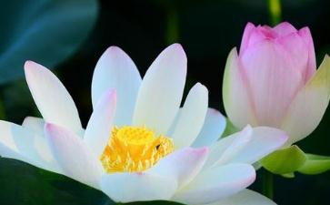

查查自己体内的毒素吧1、早晨不能在固定的时间自然醒来，起床后四肢乏力。（5分）
2、梳头时持续掉头发。（5分）
3、患有风湿症。（10分）
4、腰腹部出现赘肉。（10分）
5、经常发生便秘、腹泻。（5分）
6、呼吸道容易“上火”。（5分）
7、脸部皮肤粗糙。（5分）
8、换季时经常皮肤瘙痒。（5分）
9、工作1小时后，就感到身体倦怠，胸闷气短。（5分）
10、无名的火气很大。（5分）
11、进餐甚少，味如嚼蜡。（10分）
12、经常失眠，即使睡着了，又老是在做梦。（10分）
13、免疫力下降，春秋流感一来，难逃“流”运。（5分）
说明：1、如果累积总分超过20分，就表明您体内已有少量毒素堆积；
2、如果累积总分超过40分，说明您体内毒素堆积已较为严重；
3、如果累积总分超过60分，您体内已经有非常大量的毒素堆积，如果不马上清除，很可能引发其他不良症状。
一、身体自己就能搞定排毒其实人体就有一套很好的排毒系统，只要我们懂得正确的排毒方法一样可以达到排出毒素的效果。我们可以根据身体的不同部位进行有针对性的排毒措施。
肺脏是最易积存毒素的器官之一，每天的呼吸将约8000升空气送入肺中，空气中漂浮的细菌、病毒、粉尘等有害物质也随之进入到肺脏。不但肺要受到伤害，有毒物质还能潜入血液循环“株连全身”。
排毒措施：此时可借助咳嗽清除肺部的毒素，早上在空气清新的地方或雨后练习深呼吸，深吸气时先缓缓抬起双臂，然后突然咳嗽，同时迅速垂下双臂使气流从口鼻喷出，将痰液咳出。如此反复多遍，每天坚持这样做，能使肺保持清洁，这样可以帮助肺脏排毒。此外，还可以多吃
肾脏是排毒的重要器官，它过滤血液中的毒素和蛋白质分解后产生的废料，并通过尿液排出体外。
排毒措施：不要憋尿。尿液中毒素很多，若不及时排出，会被重新吸收，危害全身
食物残余在细菌的发酵和腐败作用下形成粪便，此过程会产生吲哚等有毒物质，再加上随食物或空气进入人体的有毒物质，需要尽快排出体外。
排毒措施：饮水冲洗肠道。肠道中的粪便毒素甚多，如硫化氢、吲哚、粪臭素，若不及时排出，会被机体重新吸收，损害人体的健康。因此应保持大便通畅。清晨起床后至少要喝200毫升水，多活动活动，能起到清刷胃肠的作用，使得大小便排出，清除毒素。以天然食品取代精加工食物，新鲜水果是强力净化食物，
肝脏是人体最大的解毒器官，各种毒素经过肝脏的一系列化学反应后，变成无毒或低毒物质。
排毒措施：体育锻炼。体育锻炼是顶级的排毒运动，通过把压力施加到肝脏等解毒器官上，改善器官的紧张状态，加快其血液循环，促进排毒。多吃
皮肤是人体最大的排毒器官，皮肤上的汗腺和皮脂腺，能够通过出汗等方式排除其他器官难以排出的毒素。
排毒措施：每周至少进行一次使身体多汗的有氧运动。每周最好还要洗一次蒸汽浴或桑拿浴，能加快新陈代谢、排毒养颜。蒸桑拿时要注意饮水，浴前喝一杯水可帮助加速排毒，浴后喝一杯水能补充水分，同时排出剩下的毒素夏日调整身心4个活力排毒方案你需要对身体进行一次排毒大扫除，从紧张和压力中释放出来，让自己变的更漂亮。下面就集中介绍了5种排毒的方法，希望经过休整，大家都可以调整好自己的状态来迎接更有挑战性的工作。
二、食物排毒法在5-7天内给你的身体来个大扫除，自我清理毒素。
A起床后喝一大杯温
起床后不要立刻进食或忙着洗脸刷牙，此时你最需要的是加了一片新鲜柠檬片（如果没有新鲜的，干柠檬片也可以）的温开水，它可以促进肾脏的循环，激发一天的新陈代谢的开始。如果你有每天服用维他命或鱼油丸的习惯，此时也可以一并服下，帮助在接下来的早餐中吸收最多的营养元素，保证一天的营养和机体正常运作。
B肝脏是解毒的重要器官，所以必须减缓肝脏的超负荷运动。需要控制
C尽情享受蔬菜和水果，高解毒的食品有：
TIPS:使用食物排毒的人在刚开始的两天可能感觉不太好，不过不必紧张，人体此时正在进入一种“康复危机”，此时肝脏正在努力去除毒素，会导致头痛、疲乏。
三、运动排毒法对于喜欢运动却懒得动手做菜或没有条件禁食的人来说，这是最合适的方法。
A每日至少散步30分钟，做些轻柔舒缓的运动，如慢跑、打太极拳。
B练习腹式呼吸：平躺下来，用鼻孔吸气，然后屏气，气流经过腹腔，再慢慢从鼻孔呼气。
C洗桑拿来帮助出汗，10到15分钟后冲一下凉水澡，刺激血液循环。
D运动的同时，要时刻补充水分，也可以喝绿茶，但绝不能喝碳酸饮料。市场上的运动型饮料，在排毒的几天里最好不要饮用。
四、皮肤排毒法：皮肤是身体排毒的重要途径，而当体内毒素累积过多时，皮肤也会首先报警。肤色黯淡、干涩无光、痘痘频频、油腻严重——这些都是身体中毒的迹象。
每天洗澡时用